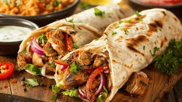

Homepage
Shawama Recipe

Shawarma is a popular Middle Eastern dish made of seasoned, marinated meat (usually chicken, lamb, or beef) cooked on a vertical rotisserie, but you can easily make it at home using a skillet or oven.
INGREDIENTS
For the Marinade:
- 500g (1lb) chicken thighs (boneless, skinless)
- 2 tbsp plain yogurt
- 2 tbsp olive oil
- 2 tbsp lemon juice
- 3 cloves garlic (minced)
- 1 tsp ground cumin
- 1 tsp paprika
- 1 tsp ground coriander
- 1 tsp turmeric
- 1/2 tsp ground cinnamon
- 1/2 tsp ground black pepper
- 1 tsp salt
For the Garlic Sauce
- /2 cup mayonnaise (or use 1/2 cup tahini for a different flavor)
- 2-3 garlic cloves, minced
- 1 tbsp lemon juice
- Salt to taste
- 1 tbsp olive oil
For Serving
- Pita or flatbreads
- Sliced tomatoes
- Shredded lettuce
- Sliced cucumbers
- Pickles (optional)
- Onions, thinly sliced (optional)
INSTRUCTIONS
- Marinate the meat
- In a bowl, combine olive oil, garlic, cumin, coriander, paprika, turmeric, cinnamon, allspice, cardamom, lemon juice, salt, and black pepper.
- Add the chicken (or your choice of meat) and toss to coat evenly. Let it marinate for at least 1 hour, or up to overnight in the fridge.
- Cook the meat
- Grill or pan-fry: Heat a grill or a skillet over medium-high heat. Cook the marinated chicken for about 5-7 minutes per side, until fully cooked and golden brown. Let the meat rest for a few minutes before slicing it thinly.
- Oven method: Preheat the oven to 400°F (200°C). Place the marinated chicken on a baking sheet and bake for 20-25 minutes or until fully cooked. Once done, slice thinly.
- Make the Garlic Sauce (Toum):
- In a small bowl, mix the mayonnaise (or tahini), minced garlic, lemon juice, olive oil, and salt. Stir until smooth. Adjust seasoning to taste.
- Assemble the Shawarma:
- Warm the pita or flatbread.
- Add a generous portion of the sliced shawarma meat to the bread.
- Top with garlic sauce, and add your choice of fresh toppings like lettuce, tomatoes, cucumbers, pickles, and onions.
- Serve
- Roll up the bread with the filling, or serve it open-faced. Enjoy your homemade shawarma!